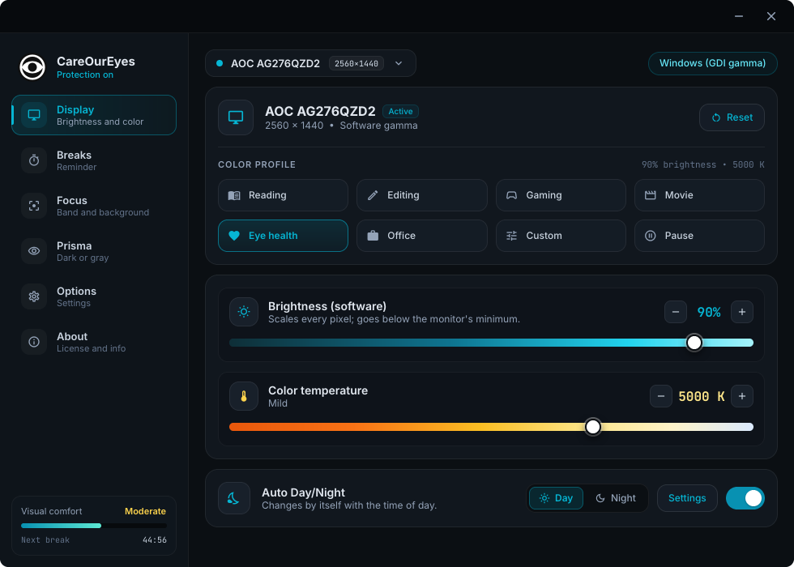
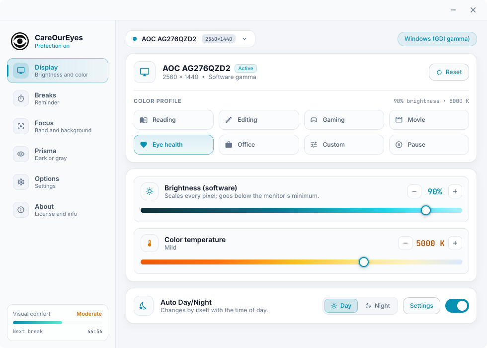
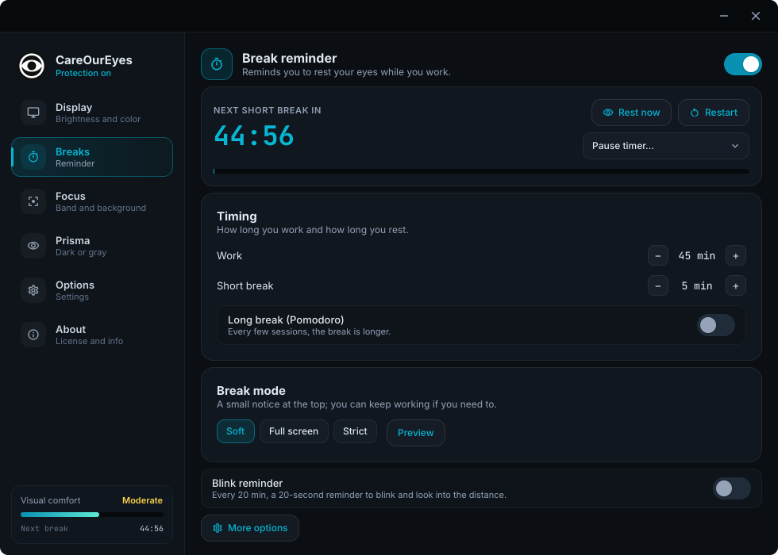
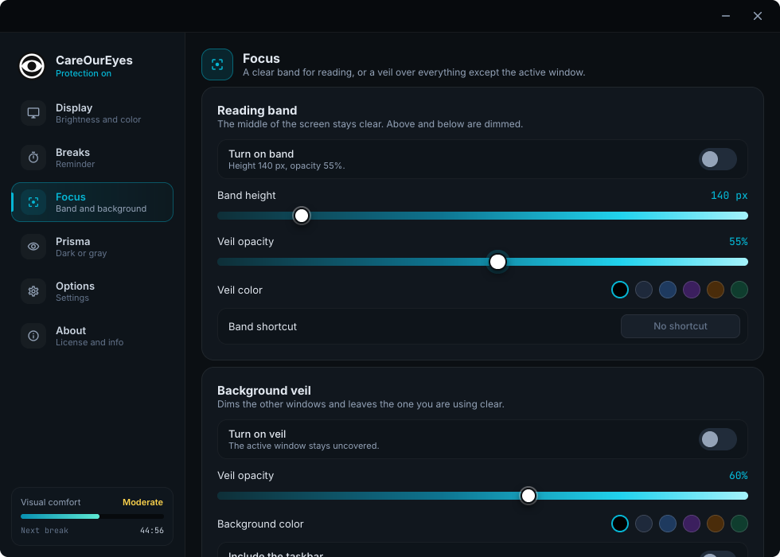

Look after your eyes at the screen
Dim below your monitor's minimum, warm up the colors at night and get reminded to rest your eyes. No accounts, no ads and no paid version.
Latest version: — · Windows · Linux · macOS · Other systems and files

What it does
One app for brightness, color and breaks.
Dimming below the minimum
It scales every pixel, so it goes lower than your monitor's own control. Great for working at night.
Color temperature
From neutral white to a warm tone that is easier on the eyes, with smooth transitions.
Auto day/night
Day and night values that switch on their own by schedule or by sunrise and sunset where you live.
Per-display profiles
Reading, Editing, Gaming, Movie, Eye health, Office… The same on every display or each one on its own.
Break reminder
20-20-20 rule, Pomodoro, gentle, full-screen or strict breaks, and a blink reminder.
Focus
A clear band for reading, or a veil that dims everything except the window you are using.
Prisma
Darkens or grays out a single window that has no dark mode (Windows).
Shortcuts and rules
Global keyboard shortcuts and automatic profiles for the program in front of you.
Screenshots
Light, dark or system theme, with seven accent colors.



Coming from CareUEyes, f.lux or Iris?
CareOurEyes started as a free alternative to programs like these. It is an independent project, written from scratch in Rust and Slint, and it will always be free.
CareUEyes, f.lux and Iris are trademarks of their respective owners. CareOurEyes is not affiliated with them.
- Truly free: no licenses, no Pro version and no account.
- Open source (GPL-3.0): anyone can review it, improve it or build it.
- Runs on Windows, Linux and macOS with the same interface.
- Respects your monitor calibration and restores it exactly on exit.
- In 10 languages.
Systems
What works on each one.
| Feature | Windows | Linux | macOS |
|---|---|---|---|
| Brightness, temperature, profiles and auto day/night | Yes | Yes ¹ | Experimental |
| Tray icon and start at login | Yes | Yes | Experimental |
| Break reminder | Yes | Yes | Experimental |
| Keyboard shortcuts and per-program rules | Yes | Yes (X11) | Experimental |
| Focus (band and veil) | Yes | Yes (X11) | Experimental |
| Prisma | Yes | — | — |
¹ On X11, and on Wayland with Sway, Hyprland and other wlroots compositors. On GNOME and KDE Plasma under Wayland only the color can change (through their night light). macOS: written but not yet tested on a Mac; reports are welcome.
Frequently asked questions
Is it really free?
Yes. CareOurEyes is free software under the GPL-3.0 license. There is no paid version, no ads and no accounts.
Windows warns me when installing. Is it safe?
The installers are not signed with a commercial certificate, so SmartScreen warns: choose “More info” → “Run anyway”. Every download comes with a GitHub attestation proving it was built from this repository (see below).
How do I check that a download is genuine?
With GitHub CLI: gh attestation verify FILE -R DSGM-GMSD/CareOurEyes. You can also compare the SHA-256 with the release's SHA256SUMS file.
Does it work on Wayland?
Yes, with limits. On Sway, Hyprland and similar, brightness and color work fully. On GNOME and KDE Plasma only the color, through their night light. Wayland does not allow global shortcuts, per-program rules or Focus.
And on macOS?
The Mac version exists but nobody has tested it on a real Mac yet. It is not signed by Apple: the first time, go to System Settings › Privacy & Security and choose “Open Anyway”. Turn off Night Shift while you use it.
Does it change my monitor calibration?
No. On start it saves each display's color table, applies its settings on top and restores it exactly on exit.